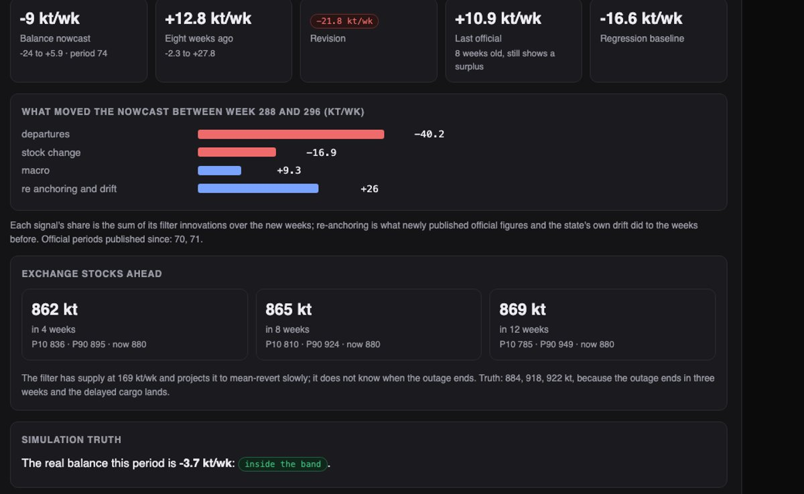
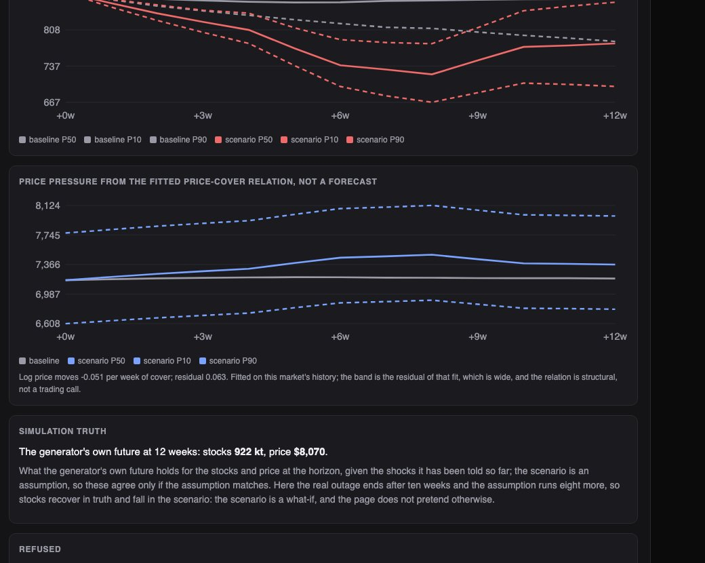

Python · Kalman filter · Time series · 2026-10
Is Copper in Surplus Right Now?
A research desk over an invented copper market where official statistics arrive two months late: a Kalman nowcast of the supply-demand balance that names what moved it signal by signal (error 2.8 kt/week against 15.8 for the last official figure), change points on cargo flows, sourced events, and a scenario engine that keeps structure apart from any price call.

Built from a written blueprint as one vertical slice. The market is simulated: mines, ports, cargoes, prices and statistics come from a generator in the repository, and the demo's disruption is injected by telling the generator what happens, which is what lets every nowcast be checked against the truth. Nothing here is real data or trading advice. No language model is used. Not built: exchange, EIA/USGS, NOAA or AIS connectors, news extraction, a feature store, more than one commodity, Kafka, Terraform, single sign-on.
01 — The problem
A desk watching a metal knows the price today and the fundamentals two months ago. Official production and consumption arrive after the quarter they describe; shipping, exchange stocks and the futures curve arrive at once. The question is whether the market is in surplus or deficit right now, and when the answer changes, which data changed it. The trap is to answer with a price forecast dressed as analysis. Can software nowcast the balance with an honest band, say exactly which signals moved it, catch a disruption in the shipping data before the statistics show it, and run a scenario without pretending to call the price?
Blueprint 9 of fifteen in a third build book, built as its demo scenario end to end.
02 — What I built
A Python service on PostgreSQL with a background worker and a web page, started by one docker compose up.
- Signals with the right information set: official figures only where published, proxies for the weeks since.
- A two-state Kalman nowcast (supply, demand) with each observation's contribution kept, back-tested against the last official figure and a regression.
- Revision explanations: the change between two runs split by signal, plus re-anchoring on newly published figures.
- Change points on departures by origin and overdue cargo by port; sourced events recorded by an analyst.
- Scenarios that propagate assumed cuts and delays to stocks and cover, with a price band labelled structural.
03 — How it was built
- 01
A market where the statistics are late
Three mining regions ship through three ports to three importers, one to three cargoes a route a week with a planned and a realised transit. The balance of supply over demand moves exchange stocks (half of it visible, the rest reverting off-warrant), stocks set weeks of cover, and cover sets the price level and the 3-month spread. Official production and demand are published eight weeks after each four-week period; shipping, stocks, prices and a macro index are seen the same week. Sixteen mine outages happen in the six years of history, which is what the detector and the models learn from.
def official_available(w, now): return (period_of(w) + 1) * PERIOD + LAG <= now - 02
A nowcast that remembers who told it what
Three observation equations are fitted on published weeks: departures on last week's supply, stock change on the balance and the stock level, demand on the macro index. A Kalman filter runs over all weeks with today's information set, anchored by official figures where they exist and carried by the proxies since. The period balance is the filtered supply minus demand averaged over the period. Every observation's innovation times its gain is kept, so the nowcast can say what each signal contributed, and a revision between two runs is split into the new weeks' innovations by signal plus what newly published figures did to the weeks before.
K = Pp @ H / s xp = xp + K * y contrib[w, k] = (K[S_] - K[D_]) * y - 03
The shipping data speaks before the ministry does
Eight weeks after the load, with Chile quietly losing a third of its output and Callao congested, the two newly published official periods still show a surplus. A two-sided CUSUM per series, standardised by the trailing year with the last eight weeks excluded so a drift cannot hide itself, flags Antofagasta departures down 28 kt a week and overdue cargo out of Callao up 31 kt. The nowcast swings from +12.8 to −9 kt a week, and the page shows departures contributed −40, stock draws −17, the macro index +9 and re-anchoring +26.
z = (series[t] - ref.mean()) / max(ref.std(), 1e-6) s_neg = max(0.0, s_neg - z - k) - 04
A scenario that is not a price call
Assumptions in: the outage runs eight more weeks, the port stays congested four. Production cuts lower the balance for their weeks; congestion holds a port's flow at sea for the extra weeks and lands it afterwards; both go through the fitted stock equation in 400 paths. Out: stocks and cover with bands, and a price band from log price regressed on cover, with that regression's residual. The response says the relation is structural and fitted on this market's history, and the evaluation shows it has no directional skill. The generator's own future is shown beside the scenario and differs, because the assumption outlasts the real outage.
for k in range(s["start"] + T, min(weeks, s["start"] + T + e)): arrival_shift[k] -= flow # still at sea for k in range(s["start"] + L + T, min(weeks, s["start"] + L + T + e)): arrival_shift[k] += flow # lands when the port clears - 05
Provenance over extraction
The blueprint has a news service with embeddings. Here an analyst records an event with a type, a region, a severity and a source URI, and the timeline shows events, nowcast runs with their bands, anomalies and the feed's own clock in order. No text is extracted and no language model is used; the honest version of a news service for a slice this size is a form with a required source field.
source_uri: str = Field(min_length=8, max_length=300)
04 — Results
The demo. Over 5,281 cargoes and six years of weeks, the load-time back-test puts the nowcast's error at 2.8 kt a week against 4.9 for a regression on the same signals and 15.8 for the last official figure. The revised nowcast after eight weeks of data, and what moved it:
Baseline against the disruption continuing: stocks, cover and a price band labelled structural.

On three other simulated markets, 32 periods each:
| System | Baseline | |
|---|---|---|
| Balance nowcast error (kt/week) | 2.3–2.9 | 11.8–28.6 last official |
| Truth inside the 80% band | 84–91% | – |
| Stocks 12 weeks ahead (kt) | 39–71 | 45–83 random walk |
| Outages caught | 24 of 32 | 5 false alarms in 18 port-years |
| Price direction, 12 weeks | 34–53% | 50% coin toss |
The nowcast's gain is large because the simulator's relations are stable and the past comes from the same process; a real market would give some back. The stock forecast beats a random walk by a little. The price relation has no directional skill, which is why the scenario engine uses it only to put a band on an assumed stock path.
Honest limits. One commodity, generated data, no revisions to official figures, and a detector that needs five to seven weeks and misses a quarter of outages. The band is a little wide.
Checks. 12 tests, including: the world is deterministic and the demo shocks land where they should, signals respect the publication lag, the nowcast beats the regression and the last official figure over 20 periods with the band holding, CUSUM finds a step and stays quiet on noise, the anomalies name the demo's outage and congestion, delayed cargo in a scenario is never lost, a revision's drivers sum to the revision, an event without a timezone or a scenario with an unknown region is refused, and one desk cannot see another's forecasts.
05 — What I'd do next
- Revisions to official data, with the filter re-anchoring on the revised figure and the revision shown as its own driver.
- A second commodity sharing the macro state, which is where a factor model starts to earn its place.
- A real public series (exchange stocks, trade statistics) to see how much of the nowcast's gain survives ragged data.